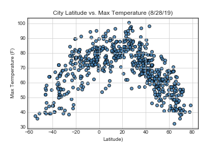

The above chart shows a clear arc of temperature values with lower max temps seen in both the lower ( -80 to -20 Lat) and higher latitudes (20 to 80 Lat) with higher temps seen the middle latitudes ( -20 to 20 Lat). Within the equatorial zone (-23.5 to 23.5 Lat) the majority of max temperatures are between 70 degrees to 95 degrees Fahrenheit. Cities with max temps above 90 degrees (f) are only seen between -20 and 45 degrees latitude, as it is generally summer for the northern hemisphere and winter for the southern. The hottest cities (roughly a hand full) are between between 20-40 Lat, with highest number of cities with max temps between 90-100 (f).
Generally, the majority of cities at latitudes above 40 degrees do not see a max temp above 70, and overall max temp range is from 35-98 degrees (f). Whereas the equatorial cities see a max temp range from 55-95 degrees (f). One thing to note, the data may represent more cities in latitudes outside the equator as the bulk of data appears to be from latitudes 20+ but the bulk of those cities high temps are below 70 degrees. A fairer comparison would be to choose an equal number of cities in the equatorial zone, northern and southern hemispheres.